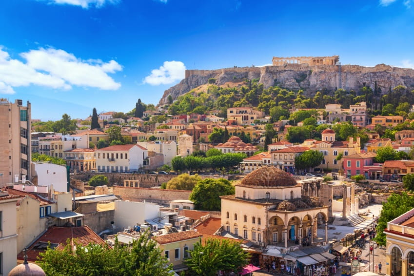
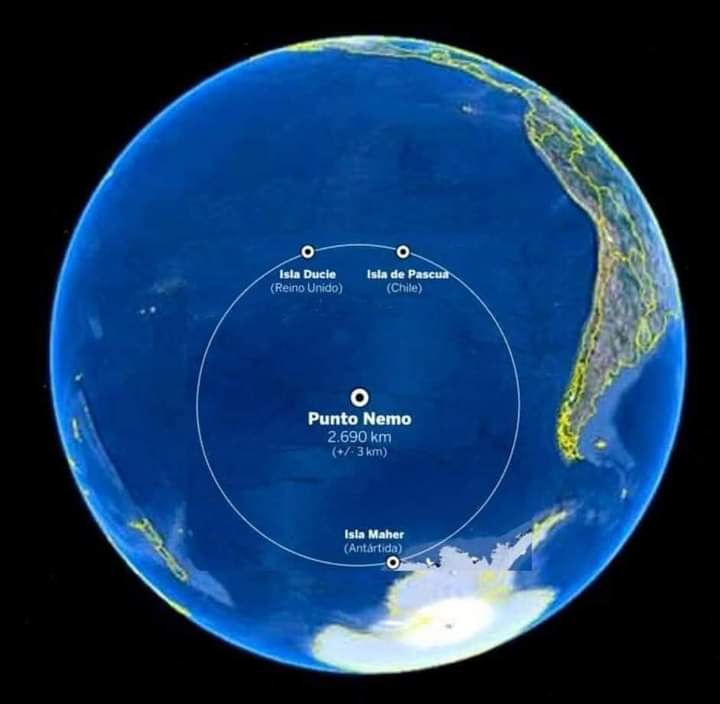

Metas en el futuro
- En los próximos 5 años
- Terminar la universidad
- Conseguir un trabajo
- Que esté relacionado con mi carrera
- Que tenga una buena paga
- Tener un carro propio
- Mantener una buena salud
- En los próximos 10 años
- Tener una pareja
- Ser económicamente independiente
- Conseguir un lugar en donde vivir
- Hablar inglés de una manera mucho más fluida
- Viajar a otro país
- En los próximos 20 años
- Tener hijos
- Tener un trabajo consolidado
- Con antigüedad
- Un buen puesto en la compañía
- Llevarme bien con mi familia
- Transmitir mis conocimientos a los más jóvenes
Habilidades propias
- Tengo una buena memoria y se me facilita recordar cosas.
- Soy bueno para las matemáticas.
- Puedo correr muy rápido.
- Se me da bien la química.
- Puedo saltar muy alto.
- Tengo una gran creatividad e imaginación.
- Soy bastante disciplinado.
Preguntas
Si fueras económicamente independiente, ¿Qué harías con tu dinero?
Intentaría cuidar mi dinero lo más posible, gastando únicamente en cosas que necesite para mi vida diaria, como alimentos, agua, luz, etc. También lo gastaría en cosas no tan necesarias, como objetos para decorar la casa, pero seguiría con mi perspectiva de ahorrar lo más posible. Por último intentaría invertir una parte de mi dinero para poner un negocio de comida.
¿Cuál es el lugar del mundo que más te gustaría visitar si pudieras y por qué?
Me gustaría visitar Atenas, Grecia, me parece una ciudad muy interesante, con una gran cultura y cientos de lugares para visitar, pues en el pasado fue una de las civilizaciones más influyentes del mundo y hoy en día es una de las ciudades de Grecia que conserva una gran parte de la cultura de aquella civilización antigua.

¿Cuál sería el lugar del mundo que menos te gustaría visitar y por qué?
No me gustaría visitar el punto Nemo, este lugar se encuentra en medio del océano y es el lugar más alejado de cualquier civilización o porción de tierra firme, la costa más cercana se encuentra a 2688 kilómetros de distancia. Los lugares más cercanos a este lugar son: Isla Ducie (Islas Pitcairn), Maher (Antártida) y la Isla Motu Nui (Chile).
